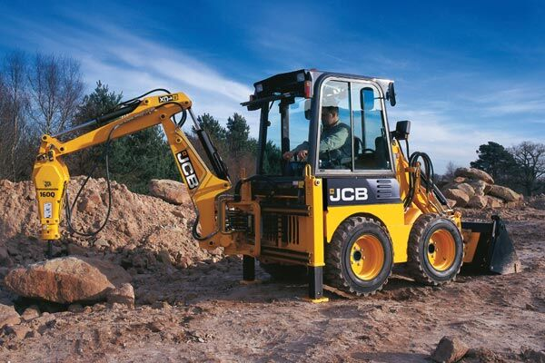
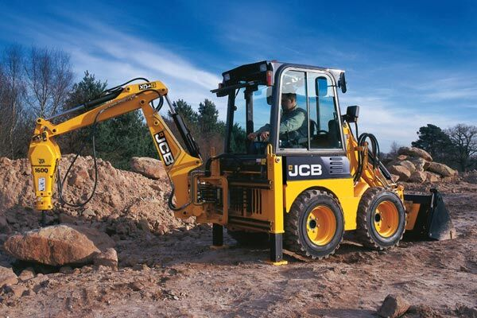

The Wideland Group was founded in 2008 and is a privately owned Australian Company which prides itself on providing customers with quality products, and our specialist friendly staff are dedicated to providing our customers with
the best service possible.
Wideland Group have dealerships located throughout Queensland and New South Wales with our network offering new and used Agricultural and Construction Equipment, Trucks and Motor Vehicles.
Our
friendly highly qualified staff are specialists in their fields and are committed to providing you with the best advice, backup and support.
We strongly support and encourage our employees to be active members of their
local communities and the Wideland Group has a long history of supporting the local community through various initiatives.
We love building long-term, trusted relationships with our customers, employees and communities
and we strongly believe our success comes from these relationships.
We represent some of the most iconic, high performing brands with our vision being Customers First, Competitive Pricing and providing exceptional knowledge
and service.
 
